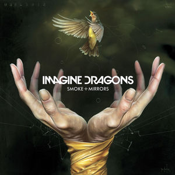
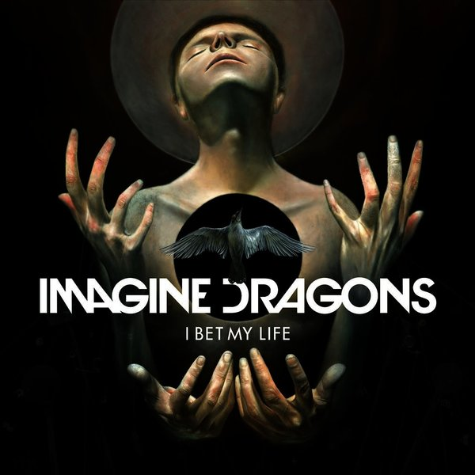
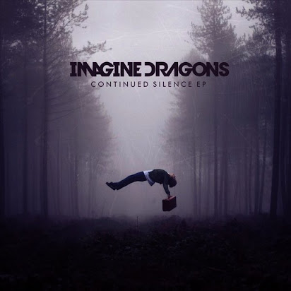

O caminho até o sucesso
Depois de lançar seu álbum de estreia Night Visions em 2012 (apresentando o single vencedor do Grammy “Radioactive”), Os Imagine Dragons passou quase dois anos trazendo sua marca apaixonadamente inventiva de rock alternativo para arenas em todo o mundo. Para lidar com o caos de uma agenda de turnês que incluía 130 datas de manchetes e 50 festivais em todo o mundo, o quarteto de Las Vegas se dedicou à criação de material para seu próximo álbum. "Tantas coisas estavam mudando para nós tão rapidamente, a única maneira de sentir algum tipo de estabilidade era continuar escrevendo, ” o baixista Ben McKee e o baterista Daniel Platzman. “Subir para o meu quarto de hotel para trabalhar em novas canções tornou-se algo que esperava todas as noites da turnê,” Reynolds acrescenta. "Definitivamente, houve algumas vezes em que a pessoa ao lado está batendo na parede porque são 4 da manhã e eles estão tentando dormir e eu estou lá cantando uma música que acabei de escrever. ”
Com Smoke + Mirrors, Imagine Dragons usam a energia frenética da vida na estrada para infundir sua música com tensão crua e vulnerabilidade intensa. Como em Night Visions - que levou a Imagine Dragons a acumular mais de 3,9 milhões de vendas de álbuns e 24 milhões de vendas de faixas em todo o mundo a banda trabalha com batidas e grooves agudamente elaborados para sonhar com música rock ritmada que é artística, mas visceral. Também revelando a dedicação da banda em mantê-la caseira, Smoke + Mirrors marca o primeiro lançamento gravado em seu novo estúdio caseiro. “Trabalhar em um estúdio alugado geralmente acaba com o processo criativo sendo um tanto apressado, então essa era a melhor maneira de fazer algo no nosso próprio ritmo ”, explica Reynolds. Em cada música extensa do Smoke + Mirrors - incluindo o single principal, mas hino, "Bet My Life" e o soulful, faixa-título movida a tambor tribal - Imagine Dragons revelam a dor Em cada música extensa e viciante do Smoke + Mirrors - incluindo o single principal, mas hino, "Bet My Life" e a emocionante faixa-título movida a bateria tribal - Imagine Dragons revelam a dor e a alegria que vêm com a busca da alma e a transcendência.
“Um dos objetivos ao fazer este álbum era capturar os extremos dos últimos dois anos”, diz Reynolds. “Houve momentos na estrada em que eu estava nas alturas, como depois de tocar no Brasil para 80.000 pessoas, e houve outras vezes em que eu estava realmente sentindo o quão difícil e solitário foi ficar longe da minha família por tanto tempo. ” Para deixar essa emoção nua, Imagine Dragons retirou alguns floreios de estúdio e abraçou uma sensação de imperfeição brilhante na produção de Smoke + Mirrors. “Muitos dos vocais do álbum foram aqueles que gravei no meu laptop ou em um microfone USB barato no meu quarto de hotel, porque essas foram as tomadas que realmente tiveram o espírito do momento em que a música foi escrita, ” Reynolds aponta. Ao mesmo tempo, o Imagine Dragons expandiu seu som usando instrumentos coletados em suas viagens, adicionando ainda mais textura e profundidade aos ritmos e melodias já intrincados da banda. A performance ao vivo sempre foi essencial para Imagine Dragons, que se formou em 2009 e rapidamente ganhou uma base de seguidores, fazendo turnês extensas e lançando uma série de EPs de forma independente. Após assinar com a KIDinaKORNER / Interscope Records, a banda fez sua estréia em uma grande gravadora com o lançamento de Continued Silence (um EP de 2012 com o single inovador "It’s Time"). Uma vez que Night Visions chegou no final do mesmo ano, A Imagine Dragons logo se encontrou em uma trajetória em direção ao céu que viu o álbum subir para a segunda posição na parada da Billboard 200 bem como o grupo levando para casa o Melhor Performance de Rock por “Radioactive” no Grammy Awards 2014.
Apesar do turbilhão dos últimos anos, o impulso para criar música sonora aventureira, mas descaradamente honesta, permaneceu uma constante para Imagine Dragons. E para Reynolds - que se lembra de ter entrado furtivamente no computador de seu irmão mais velho aos 13 anos para usar o software de gravação e esboçar músicas sobre sua dor de cabeça e frustrações no início da adolescência — Smoke + Mirrors provou sua experiência mais ousada em composição até então. “Às vezes é realmente assustador pensar que tantas pessoas ouvem o que estou falando nas letras deste álbum, mas eu sei que para o bem para o pior é completamente autêntico e genuíno e verdadeiro para quem somos como uma banda ”, diz Reynolds. “E isso é a coisa mais importante que você pode fazer como artista, e também a mais mágica: esqueça tudo e todos por enquanto, e apenas crie o que for mais significativo para você. ”